Why CNN and not Regular Neural Nets
1. Regular Neural Nets don’t scale well to full images
In MNIST dataset,images are only of size 28x28x1 (28 wide, 28 high, 1 color channels), so a single fully-connected neuron in a first hidden layer of a regular Neural Network would have 28x28x1 = 786 weights. This amount still seems manageable,
But what if we move to larger images.
For example, an image of more respectable size, e.g. 200x200x3, would lead to neurons that have 200x200x3 = 120,000 weights. Moreover, we would almost certainly want to have several such neurons, so the parameters would add up quickly! Clearly, this full connectivity is wasteful and the huge number of parameters would quickly lead to overfitting.
2.Parameter Sharing
A feature detector that is useful in one part of the image is probably useful in another part of the image.Thus CNN are good in capturing translation invariance.
Sparsity of connections In each layer,each output value depends only on a small number of inputs.This makes CNN networks easy to train on smaller training datasets and is less prone to overfitting.
2.3D volumes of neurons. Convolutional Neural Networks take advantage of the fact that the input consists of images and they constrain the architecture in a more sensible way. In particular, unlike a regular Neural Network, the layers of a ConvNet have neurons arranged in 3 dimensions: width, height, depth.
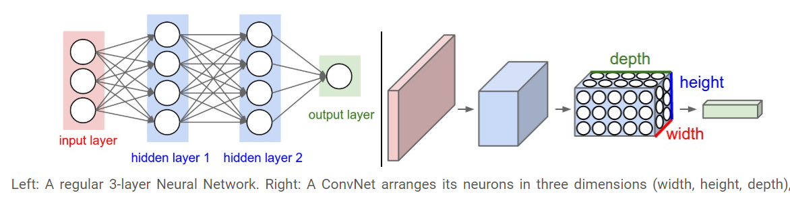
Convolution
In purely mathematical terms, convolution is a function derived from two given functions by integration which expresses how the shape of one is modified by the other.
However we are interested in understanding the actual convolution operation in the context of neural networks.
An intuitive understanding of Convolution
Convolution is an operation done to extract features from the images as these features will be used by the network to learn about a particular image.In the case of a dog image,the feature could be the shape of a nose or the shape of an eye which will help the network later to identify an image as a dog.
Convolution operation is performed with the help of the following three elements:
1.Input Image- The image to convolve on
2.Feature Detector/Kernel/Filter- They are the bunch of numbers in a matrix form intended to extract features from an image.They can be 1dimensional ,2-dimensional or 3-dimensional
3.Feature Map/Activation Map- The resultant of the convolution operation performed between image and feature detector gives a Feature Map.
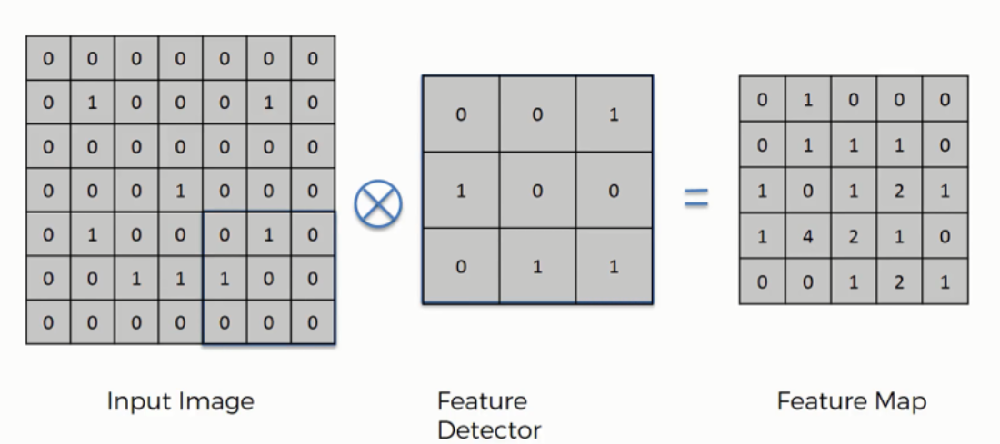

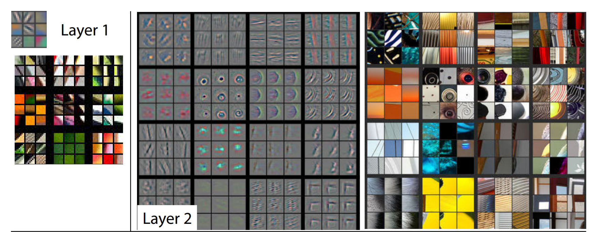 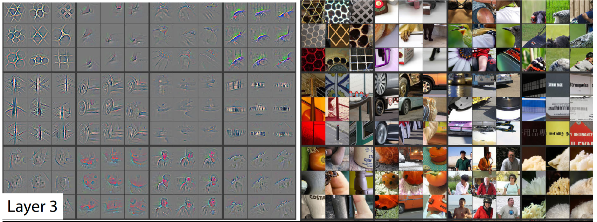 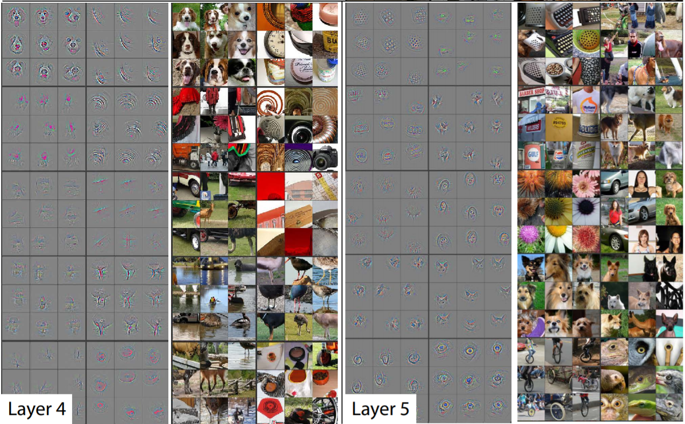
Convolution Operation

Another way to look at it

Let say we have an input of \(6 x 6\) and a filter size \(3 x 3\)
Feature map is of size \(4 x 4\) 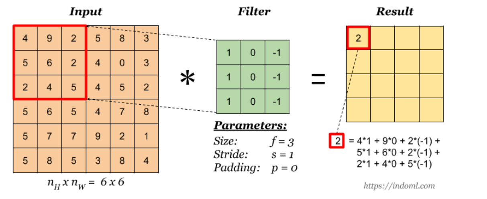
Convolution over Volume
What if our input image has more than one channel?
Let say we have an input of \(6 x 6 x 3\) and a filter size \(3 x 3 x 3\)
Feature map is of size \(4 x 4\)
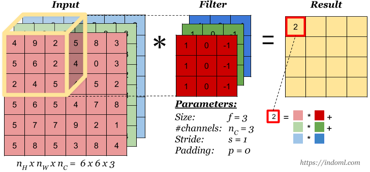
Convolution Operation with Multiple Filters
Let say we have an input of \(6 x 6 x 3\) and we use two filters size \(3 x 3\)
Feature map is of size \(4 x 4 x 2\)
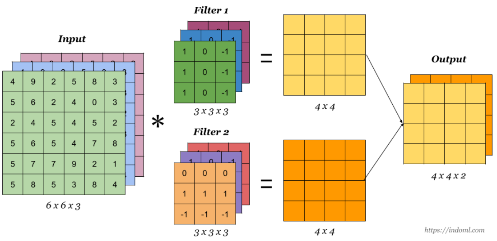
General Representation
\[Input Image [n(h)*n(w)*n(c)]-Filter-[f(h)*f(w)*n(c)],n(c')--Feature Map--[(n-f+1)*(n-f+1)*n(c')]\]
\(n(h)\)-height of the image
\(n(w)\)-width of the image
\(n(c)\)-number of channel in an image
\(f(h)\)-height of the filter
\(f(w)\)-width of the filter
\(f(c')\)-no of the filter
One Convolution layer
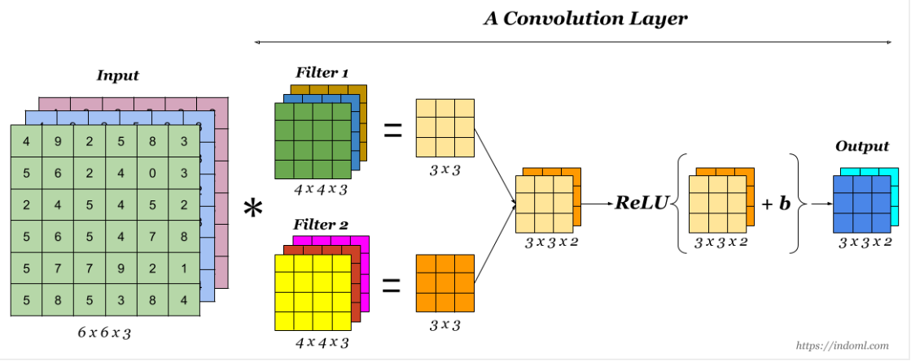
Strides
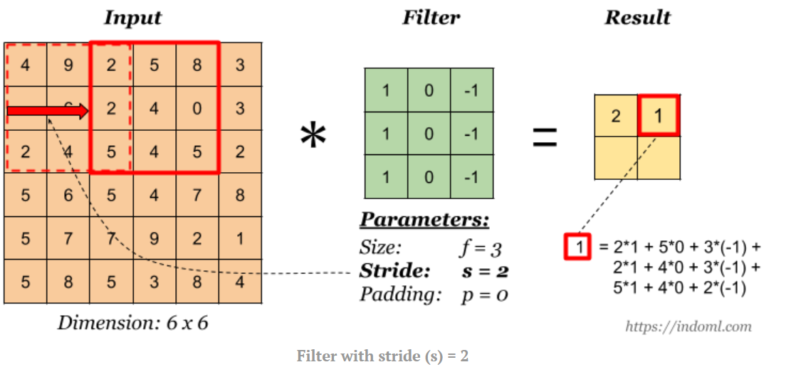
Padding
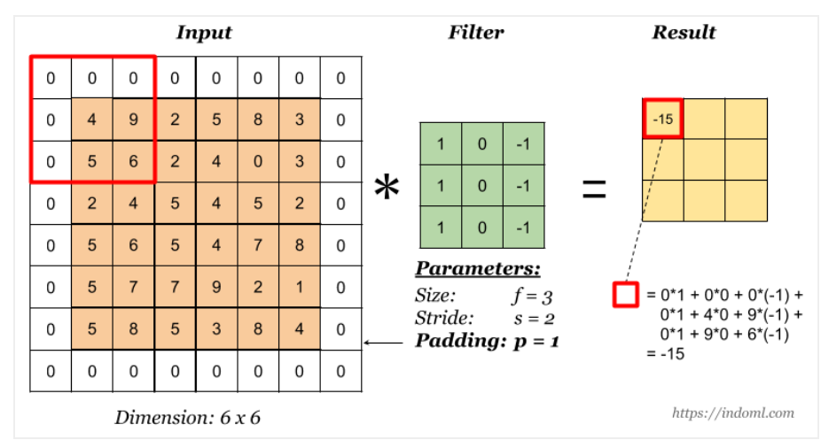
Pooling
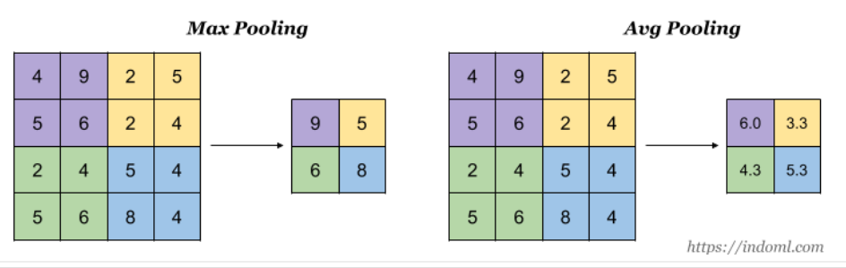
Why we do Pooling?
The idea of max pooling is: 1. to reduce the size of representation in such a way that we carry along those features which speaks louder in the image 2. to lower the number of parameters to be computed,speeding the computation 3. to make some of the features that detects significant things a bit more robust.
Analogy that I like to draw 
A good analogy to draw here would be to look into the history of shapes of pyramid.
The Greek pyramid is the one without max pooling whereas the Mesopotamian pyramid is with max pooling involved where we are loosing more information but making our network simpler than the other one.
But don’t we end up loosing information by max pooling?
Yes we do but the question we need to ask is how much information we can afford to loose without impacting much on the model prediction.
Perhaps the criteria to choose how often(after how many convolutions) and at what part of the network (at the beginning or at the mid or at the end of the network) to use max pooling depends completely on what this network is being used for.
For eg: 1. Cats vs Dogs 2. Identify the age of a person
General Representation-Updated
Including Padding and Stride
\[Input Image [n(h)*n(w)*n(c)]-Filter-[f(h)*f(w)*n(c)],n(c')--Feature Map--[((n-f+2p)/s+1)*((n-f+2p)/s+1)*n(c')]\]
\(n(h)\)-height of the image
\(n(w)\)-width of the image
\(n(c)\)-number of channel in an image
\(f(h)\)-height of the filter
\(f(w)\)-width of the filter
\(f(c')\)-no of the filter
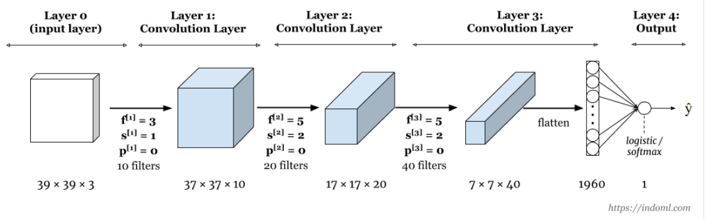
Examples
Input volume: 32x32x3
10 5x5 filters with stride 1, pad 2
Output volume size: ?
32x32x10
Input volume: 32x32x3
10 5x5 filters with stride 1, pad 2
Number of parameters in this layer?
1 x 1 Convolution
At first,the idea of using 1x1 filter seems to not make sense as 1x1 convolution is just multiplying by numbers.We will not be learning any feature here.
But wait… What if we have a layer with dimension 32x32x196,here 196 is the number of channels and we want to do convolution
So 1x1x192 convolution will do the work of dimensionality reduction by looking at each of the 196 different positions and it will do the element wise product and give out one number.Using multiple such filters say 32 will give 32 variations of this number.
 Why do we use 1x1 filter
Why do we use 1x1 filter
1x 1 filter can help in shrinking the number of channels or increasing the number of channels without changing the height and width of the layer.
It adds nonlinearity in the network which is useful in some of the architectures like Inception network.
#
Receptive Field
The receptive field is defined as the region in the input space that a particular CNN’s feature is looking at (i.e. be affected by). A receptive field of a feature can be described by its center location and its size.
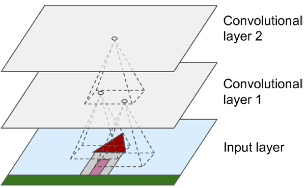
Things to remember
Filter will always have the same number of channel as the image.
Convolving gives a 2 D feature map although our image and kernel used are of 3 dimensional
Padding -Preserves the feature size
Pooling Operation- Reduces the filter size by half
What is ImageNet
ImageNet is formally a project aimed at (manually) labeling and categorizing images into almost 22,000 separate object categories for the purpose of computer vision research.
However, when we hear the term “ImageNet” in the context of deep learning and Convolutional Neural Networks, we are likely referring to the ImageNet Large Scale Visual Recognition Challenge, or ILSVRC for short.
The ImageNet project runs an annual software contest, the ImageNet Large Scale Visual Recognition Challenge (ILSVRC), where software programs compete to correctly classify and detect objects and scenes.
The goal of this image classification challenge is to train a model that can correctly classify an input image into 1,000 separate object categories.
Models are trained on ~1.2 million training images with another 50,000 images for validation and 100,000 images for testing.
These 1,000 image categories represent object classes that we encounter in our day-to-day lives, such as species of dogs, cats, various household objects, vehicle types, and much more. You can find the full list of object categories in the ILSVRC challenge
When it comes to image classification, the ImageNet challenge is the de facto benchmark for computer vision classification algorithms — and the leaderboard for this challenge has been dominated by Convolutional Neural Networks and deep learning techniques since 2012.
LeNet-5(1998)
Gradient Based Learning Applied to Document Recognition
- A pioneering 7-level convolutional network by LeCun that classifies digits,
- Found its application by several banks to recognise hand-written numbers on checks (cheques)
- These numbers were digitized in 32x32 pixel greyscale which acted as an input images.
- The ability to process higher resolution images requires larger and more convolutional layers, so this technique is constrained by the availability of computing resources.

AlexNet(2012)
ImageNet Classification with Deep Convolutional Networks
- One of the most influential publications in the field by Alex Krizhevsky, Ilya Sutskever, and Geoffrey Hinton that started the revolution of CNN in Computer Vision.This was the first time a model performed so well on a historically difficult ImageNet dataset.
- The network consisted 11x11, 5x5,3x3, convolutions and made up of 5 conv layers, max-pooling layers, dropout layers, and 3 fully connected layers.
- Used ReLU for the nonlinearity functions (Found to decrease training time as ReLUs are several times faster than the conventional tanh function) and used SGD with momentum for training.
- Used data augmentation techniques that consisted of image translations, horizontal reflections, and patch extractions.
- Implemented dropout layers in order to combat the problem of overfitting to the training data.
- Trained the model using batch stochastic gradient descent, with specific values for momentum and weight decay.
- AlexNet was trained for 6 days simultaneously on two Nvidia Geforce GTX 580 GPUs which is the reason for why their network is split into two pipelines.
- AlexNet significantly outperformed all the prior competitors and won the challenge by reducing the top-5 error from 26% to 15.3% 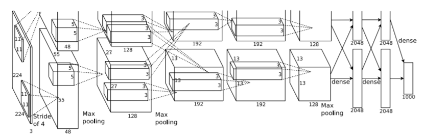
ZFNet(2013)
Visualizing and Understanding Convolutional Neural Networks
This architecture was more of a fine tuning to the previous AlexNet structure by tweaking the hyper-parameters of AlexNet while maintaining the same structure but still developed some very keys ideas about improving performance.Few minor modifications done were the following: 1. AlexNet trained on 15 million images, while ZF Net trained on only 1.3 million images. 2. Instead of using 11x11 sized filters in the first layer (which is what AlexNet implemented), ZF Net used filters of size 7x7 and a decreased stride value. The reasoning behind this modification is that a smaller filter size in the first conv layer helps retain a lot of original pixel information in the input volume. A filtering of size 11x11 proved to be skipping a lot of relevant information, especially as this is the first conv layer. 3. As the network grows, we also see a rise in the number of filters used. 4. Used ReLUs for their activation functions, cross-entropy loss for the error function, and trained using batch stochastic gradient descent. 5. Trained on a GTX 580 GPU for twelve days. 6. Developed a visualization technique named Deconvolutional Network, which helps to examine different feature activations and their relation to the input space. Called deconvnet because it maps features to pixels (the opposite of what a convolutional layer does). 7. It achieved a top-5 error rate of 14.8% 
VggNet(2014)
VERY DEEP CONVOLUTIONAL NETWORKS FOR LARGE-SCALE IMAGE RECOGNITION
This architecture is well konwn for Simplicity and depth.. VGGNet is very appealing because of its very uniform architecture.They proposed 6 different variations of VggNet however 16 layer with all 3x3 convolution produced the best result.
Few things to note: 1. The use of only 3x3 sized filters is quite different from AlexNet’s 11x11 filters in the first layer and ZF Net’s 7x7 filters. The authors’ reasoning is that the combination of two 3x3 conv layers has an effective receptive field of 5x5. This in turn simulates a larger filter while keeping the benefits of smaller filter sizes. One of the benefits is a decrease in the number of parameters. Also, with two conv layers, we’re able to use two ReLU layers instead of one. 2. 3 conv layers back to back have an effective receptive field of 7x7. 3. As the spatial size of the input volumes at each layer decrease (result of the conv and pool layers), the depth of the volumes increase due to the increased number of filters as you go down the network. 4. Interesting to notice that the number of filters doubles after each maxpool layer. This reinforces the idea of shrinking spatial dimensions, but growing depth. 5. Worked well on both image classification and localization tasks. The authors used a form of localization as regression (see page 10 of the paper for all details). 6. Built model with the Caffe toolbox. 7. Used scale jittering as one data augmentation technique during training. 8. Used ReLU layers after each conv layer and trained with batch gradient descent. 9. Trained on 4 Nvidia Titan Black GPUs for two to three weeks. 10. It achieved a top-5 error rate of 7.3%

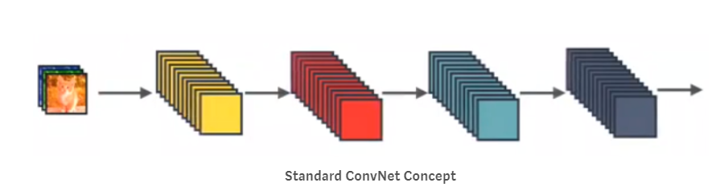 In Standard ConvNet, input image goes through multiple convolution and obtain high-level features.
After Inception V1 ,the author proposed a number of upgrades which increased the accuracy and reduced the computational complexity.This lead to many new upgrades resulting in different versions of Inception Network : 1. Inception v2 2. Inception V3
Inception Network (GoogleNet)(2014)
Going Deeper with Convolutions
Prior to this, most popular CNNs just stacked convolution layers deeper and deeper, hoping to get better performance,however Inception Network was one of the first CNN architectures that really strayed from the general approach of simply stacking conv and pooling layers on top of each other in a sequential structure and came up with the Inception Module.The Inception network was complex. It used a lot of tricks to push performance; both in terms of speed and accuracy. Its constant evolution lead to the creation of several versions of the network. The popular versions are as follows:
- Inception v1.
- Inception v2 and Inception v3.
- Inception v4 and Inception-ResNet.
Each version is an iterative improvement over the previous one.Let us go ahead and explore them one by one 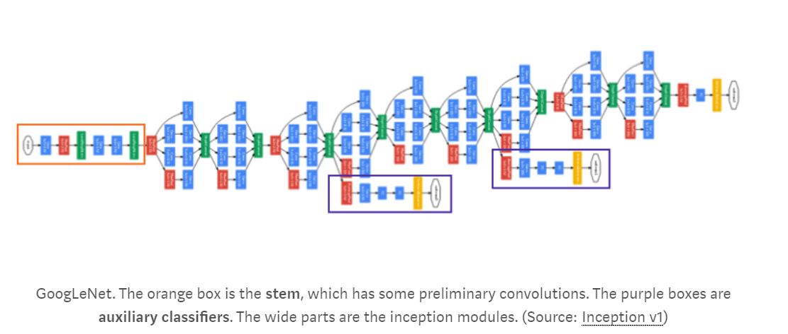
Inception V1
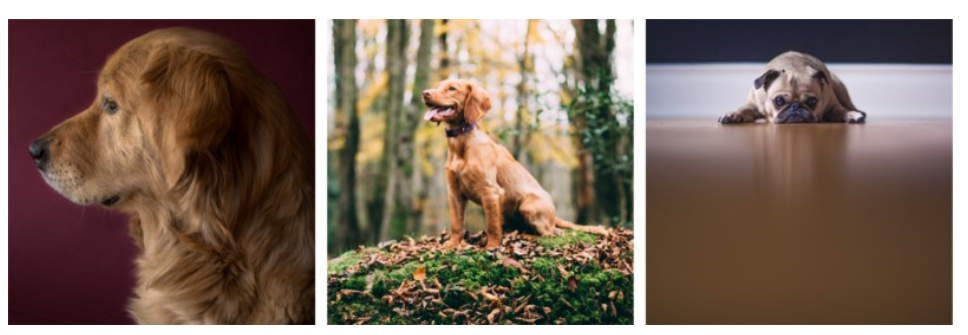 Problems this network tried to solve: 1. What is the right kernel size for convolution
A larger kernel is preferred for information that is distributed more globally, and a smaller kernel is preferred for information that is distributed more locally.
Ans- Filters with multiple sizes.The network essentially would get a bit “wider” rather than “deeper”
3. How to stack convolution which can be less computationally expensive
Stacking them naively computationally expensive.
Ans-Limit the number of input channels by adding an extra 1x1 convolution before the 3x3 and 5x5 convolutions
2. How to avoid overfitting in a very deep network
Very deep networks are prone to overfitting. It also hard to pass gradient updates through the entire network.
Ans-Introduce two auxiliary classifiers (The purple boxes in the image). They essentially applied softmax to the outputs of two of the inception modules, and computed an auxiliary loss over the same labels. The total loss function is a weighted sum of the auxiliary loss and the real loss.
The total loss used by the inception net during training.
total_loss = real_loss + 0.3 * aux_loss_1 + 0.3 * aux_loss_2
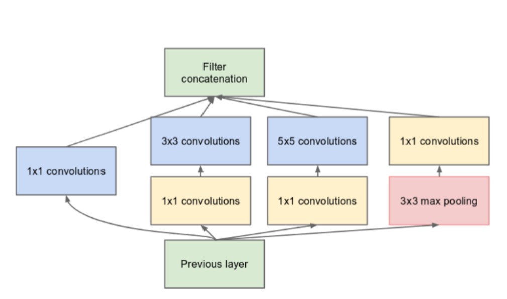
Points to note
- Used 9 Inception modules in the whole architecture, with over 100 layers in total! Now that is deep…
- No use of fully connected layers! They use an average pool instead, to go from a 7x7x1024 volume to a 1x1x1024 volume. This saves a huge number of parameters.
- Uses 12x fewer parameters than AlexNet.
- Trained on “a few high-end GPUs within a week”.
- It achieved a top-5 error rate of 6.67%
Inception V2
Rethinking the Inception Architecture for Computer Vision
Upgrades were targeted towards: 1. Reducing representational bottleneck by replacing 5x5 convolution to two 3x3 convolution operations which further improves computational speed
The intuition was that, neural networks perform better when convolutions didn’t alter the dimensions of the input drastically. Reducing the dimensions too much may cause loss of information, known as a “representational bottleneck”
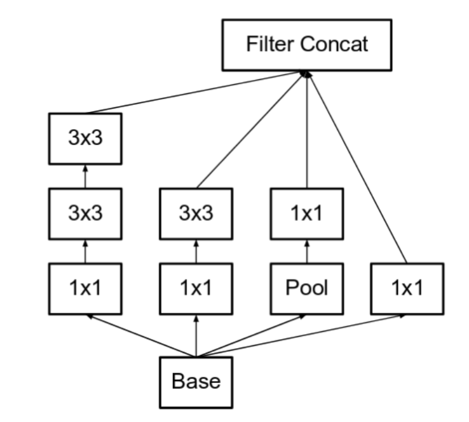 2. Using smart factorization method where they factorize convolutions of filter size nxn to a combination of 1xn and nx1 convolutions.
For example, a 3x3 convolution is equivalent to first performing a 1x3 convolution, and then performing a 3x1 convolution on its output. They found this method to be 33% more cheaper than the single 3x3 convolution. 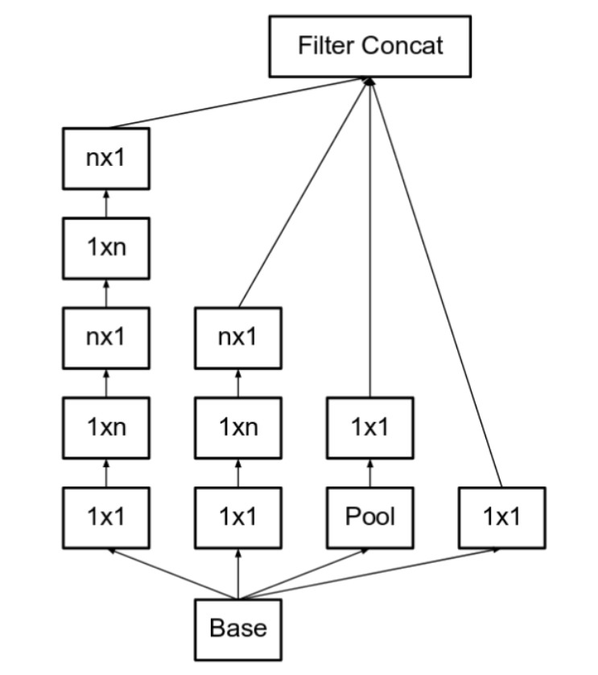
ResNet(2015)
Deep Residual Learning for Image Recognition 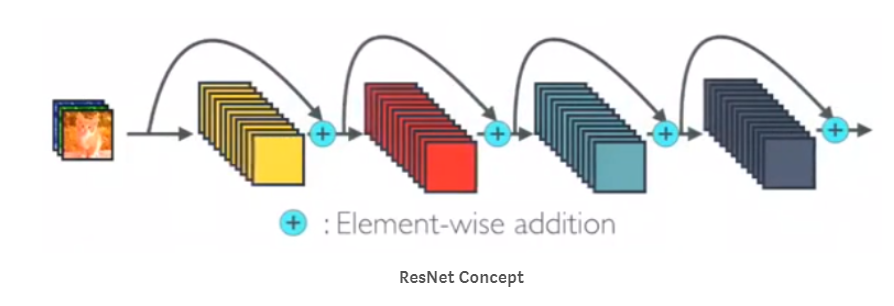 In ResNet, identity mapping is proposed to promote the gradient propagation. Element-wise addition is used. It can be viewed as algorithms with a state passed from one ResNet module to another one.


ResNet-Wide
 left: a building block of [2], right: a building block of ResNeXt with cardinality = 32
left: a building block of [2], right: a building block of ResNeXt with cardinality = 32
DenseNet(2017)
Densely Connected Convolutional Networks
It is a logical extension to ResNet.
From the paper: Recent work has shown that convolutional networks can be substantially deeper, more accurate, and efficient to train if they contain shorter connections between layers close to the input and those close to the output. In this paper, we embrace this observation and introduce the Dense Convolutional Network (DenseNet), which connects each layer to every other layer in a feed-forward fashion.
DenseNet Architecture 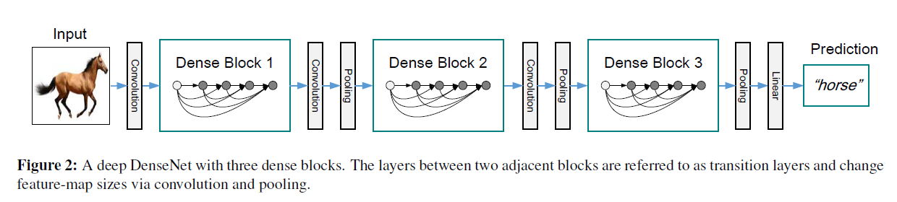
Let us explore different componenets of the network
1. Dense Block
Feature map sizes are the same within the dense block so that they can be concatenated together easily. 
In DenseNet, each layer obtains additional inputs from all preceding layers and passes on its own feature-maps to all subsequent layers. Concatenation is used. Each layer is receiving a “collective knowledge” from all preceding layers. 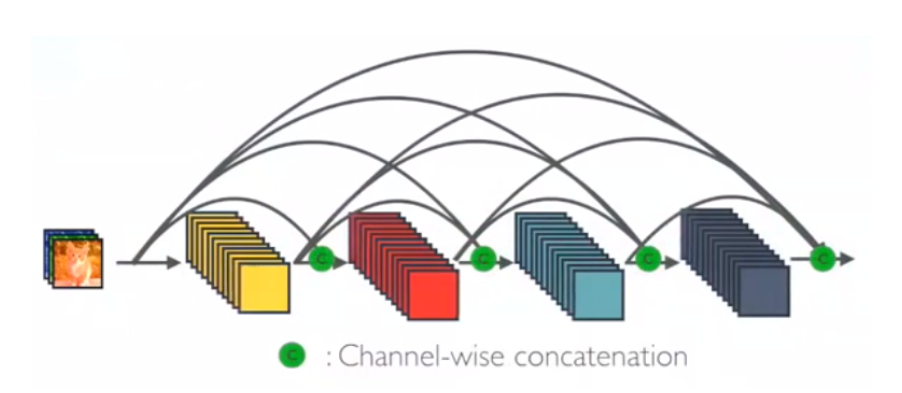
Since each layer receives feature maps from all preceding layers, network can be thinner and compact, i.e. number of channels can be fewer. The growth rate k is the additional number of channels for each layer.
The paper proposed different ways to implement DenseNet with/without B/C by adding some variations in the Dense block to further reduce the complexity,size and to bring more compression in the architecture.
1. Dense Block (DenseNet)
- Batch Norm (BN)
- ReLU
- 3×3 Convolution
2. Dense Block(DenseNet B)
- Batch Norm (BN)
- ReLU
- 1×1 Convolution
- Batch Norm (BN)
- ReLU
- 3×3 Convolution
3. Dense Block(DenseNet C)
- If a dense block contains m feature-maps, The transition layer generate $\theta $ output feature maps, where $\theta \leq \theata \leq$ is referred to as the compression factor.
- $\theta$=0.5 was used in the experiemnt which reduced the number of feature maps by 50%.
4. Dense Block(DenseNet BC)
- Combination of Densenet B and Densenet C
2. Trasition Layer
The layers between two adjacent blocks are referred to as transition layers where the following operations are done to change feature-map sizes: - 1×1 Convolution - 2×2 Average pooling
Points to Note: 1. it requires fewer parameters than traditional convolutional networks 2. Traditional convolutional networks with L layers have L connections — one between each layer and its subsequent layer — our network has L(L+1)/ 2 direct connections. 3. Improved flow of information and gradients throughout the network, which makes them easy to train 4. They alleviate the vanishing-gradient problem, strengthen feature propagation, encourage feature reuse, and substantially reduce the number of parameters. 5. Concatenating feature maps instead of summing learned by different layers increases variation in the input of subsequent layers and improves efficiency. This constitutes a major difference between DenseNets and ResNets. 6. It achieved a top-5 error rate of 6.66%
MobileNet
Spatial Seperable Convolution
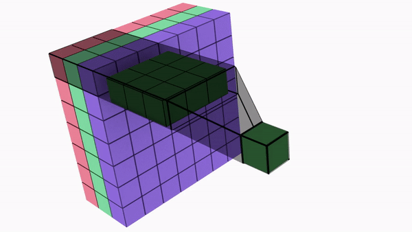
Divides a kernel into two, smaller kernels

Instead of doing one convolution with 9 multiplications(parameters), we do two convolutions with 3 multiplications(parameters) each (6 in total) to achieve the same effect

With less multiplications, computational complexity goes down, and the network is able to run faster.
This was used in an architecture called Effnet showing promising results.
The main issue with the spatial separable convolution is that not all kernels can be “separated” into two, smaller kernels. This becomes particularly bothersome during training, since of all the possible kernels the network could have adopted, it can only end up using one of the tiny portion that can be separated into two smaller kernels.
Depthwise Convolution

Say we need to increase the number of channels from 16 to 32 using 3x3 kernel.
Normal Convolution
Total No of Parameters = 3 x 3 x 16 x 32 = 4608

Depthwise Convolution
- DepthWise Convolution = 16 x [3 x 3 x 1]
- PointWise Convolution = 32 x [1 x 1 x 16]
Total Number of Parameters = 656
Mobile net uses depthwise seperable convolution to reduce the number of parameters
References
Convolution
Max Pool
Standford Slides
Standford Blog
An intuitive guide to Convolutional Neural Networks
Convolutional Neural Networks
Understanding of Convolutional Neural Network
Receptive Feild Calculation
Understanding Convolution in Deep Learning
Visualize Image Kernel
Visualizing and Understanding Convolution Networks
Standford CS231n Lecture Notes
The 9 Deep Learning Papers You Need To Know About
CNN Architectures
Lets Keep It Simple
CNN Architectures Keras
Inception Versions
DenseNet Review
DenseNet
ResNet
ResNet Versions
Depthwise Convolution